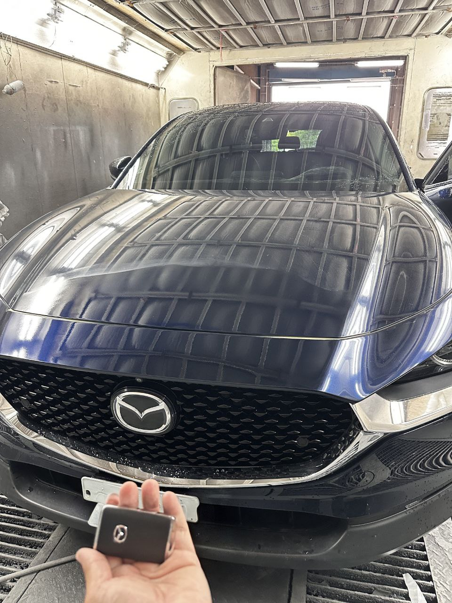
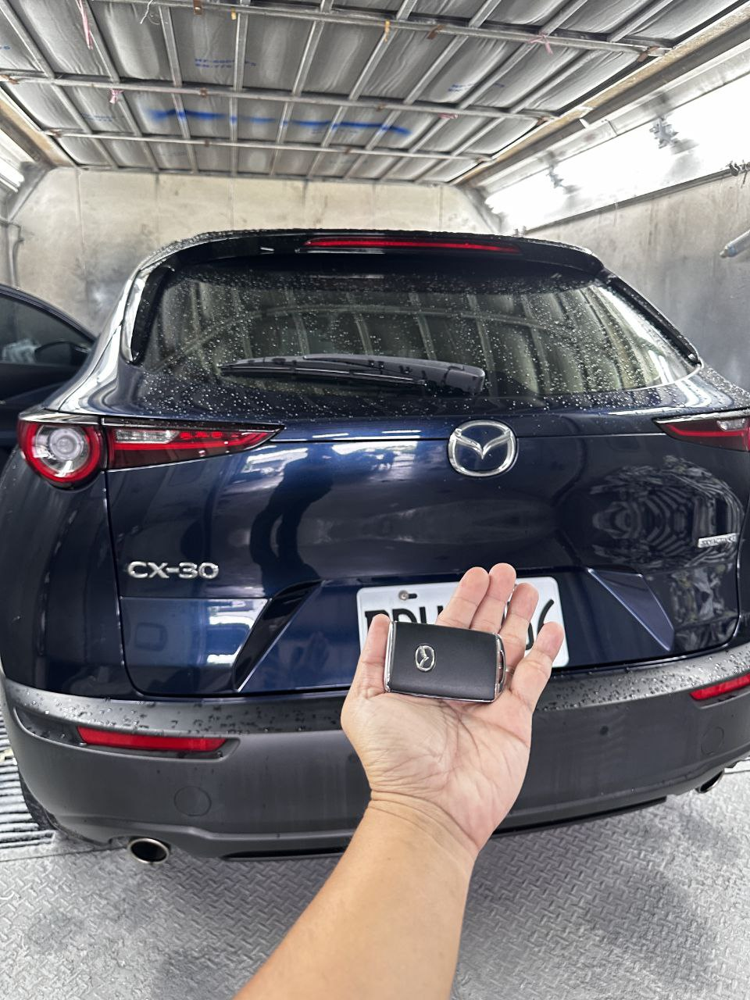

現場任務：烤漆房內的車輛狀態確認

任務達成：新智慧鑰匙功能完整同步
案例背景：烘乾後的意外
這次的救援任務發生在彰化社頭的一間烤漆廠。客戶的 Mazda CX-30 才剛完成漂亮的烤漆與烘乾程序，卻在準備交車時發現唯一的鑰匙意外失蹤。面對密封且空間有限的烤漆房環境，拖吊車根本無法進入，這讓現場氣氛一度陷入焦慮。
極致核心的解決方案
接獲電話後，我們的行動車況確認工作站立即出發，要在不影響新烤漆的情況下，為這台 CX-30 重新注入靈魂：
無損車況確認
透過車輛內部的車系檢測方式，在不拆卸任何車輛系統的前提下，精準抓取車輛安全授權數據。
最新款智慧鑰匙匹配
使用與原廠規格一致的新型三鍵式智慧鑰匙，完整支援 Keyless 免鑰匙進入與一鍵啟動功能。
為什麼選我們？
- 救援極速：一通電話，中彰投全區行動工作站迅速抵達。
- 免拖吊風險：在狹窄或特殊環境（如烤漆房、地下室）直接作業，保護您的車輛漆面。
- 車系設備支援：專攻 Mazda、BMW、Benz 等進口車車輛安全架構。